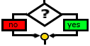
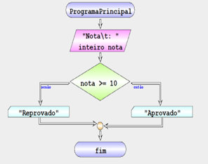
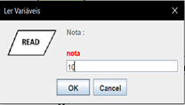
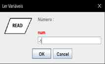
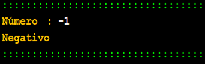
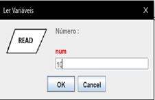
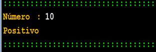

Decisão condicional
Permite dividir o fluxo e dois baseado numa condição
| Fluxograma | Pseudocódigo |
|---|---|
|  | SE <expressão lógica> <instruções> [ SENÃO ] <instruções> FIM |
• <logic expression> – expressão lógica
• <instructions> – instruções do algoritmo
O simbolo SENÃO da estrutura de decisão é opcional e as estruturas de decisão podem ser encadeadas
Exemplo 1 – Aprovado ou Reprovado
Neste exemplo temos um algoritmo que verifica se uma aluno está aprovado ou reprovado dada a sua nota final.
| Fluxograma | Pseudocódigo |
|---|---|
|  | inicio ProgramaPrincipal ler inteiro nota "Nota\t: " se nota >= 10 então escrever "Aprovado" senão escrever "Reprovado" fim se fim ProgramaPrincipal |
Resultado:
|  | 
|
|---|
Exemplo 2 – Positivo Nulo Negativo
Neste exemplo temos um algoritmo que verifica se um se um numero introduzido pelo utilizador é positivo, negativo ou nulo.
| Fluxograma | Pseudocódigo |
|---|---|
 |
inicio ProgramaPrincipal ler inteiro nota "Nota\t: " se nota >= 10 então escrever "Aprovado" senão escrever "Reprovado" fim se fim ProgramaPrincipal |
Resultado:
|  |  |
|---|
|  |  |
|---|